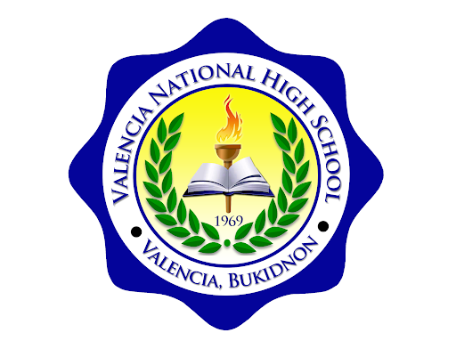

<!DOCTYPE html>
<html>
<head>
<link rel="website icon" type"svg
    a href="Google.png">
<style>
body {
  background-color: lightblue;
}

h1 {
color:#oo7acc;}

a {
background-color: #1a8cff;
color: white;
padding: 25px 20px;
text-align: center;
text-decoration: none;
display: inline-block;
font-family: Arial;
}

div {
background-color: rgb(255, 254, 254);
width: auto;
height: auto;
border-style: solid;
border: rgb(58, 118, 248) solid 10px;
padding: 15px;
margin: 35px;
text-align: center;
outline: rgb(78, 149, 255) 75px;
box-shadow: 6px 6px 15px rgb(23, 116, 255);
}

h2 {
text-align: center;
text-transform: uppercase;
color: rgb(36, 145, 247);
}

p {
background-color: Gray;
text-indent: 50px;
text-align-last: center;
letter-spacing: 0px;
font-size: 40px;
font-display: 10px;
font-family: BOLD;
box-shadow: 10px 20px 3px;
}

a:hover, a:active {
background-color: #ff6699;
color: white;
}

</style>
</html>
</head>
<body align="center"; style="background-color:lightble;">


<h1>Valencia National High School</h1>
<h2>FEEL FREE TO EXPLORE TAP THE BUTTON BELOW:</h2>


<a href="Home.html" target="_blank">Home</a>
<a href="About us.html" target="_blank">About us</a>
<a href="Contact us.html" target="_blank">Contact us</a>

<h1>ABOUT VALENCIA NATIONAL HIGH SCHOOL</h1>
<p>Valencia National High School (VNHS) is a public secondary school in Valencia City, Bukidnon, Philippines. It follows the K-12 curriculum set by the Department of Education and offers a range of subjects and extracurricular activities. The school provides standard facilities such as classrooms, laboratories, and sports areas. VNHS serves a diverse student population and is actively involved in community events and initiatives.</p>
<br>
<p>Valencia National High School (VNHS) is a government-run secondary school in Valencia City, Bukidnon, Philippines. It adheres to the K-12 educational system, offering comprehensive academic and extracurricular programs. The school is equipped with necessary facilities like classrooms, labs, and sports amenities.</p>